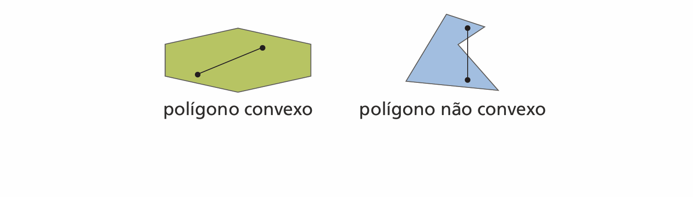
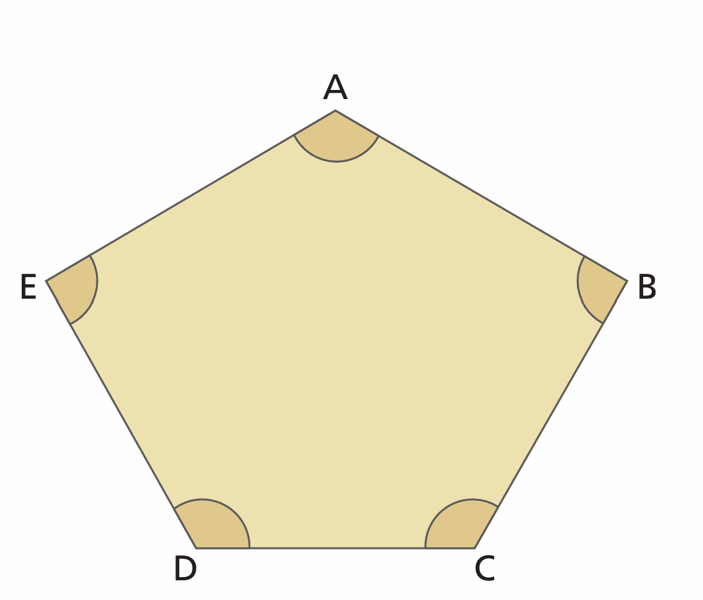
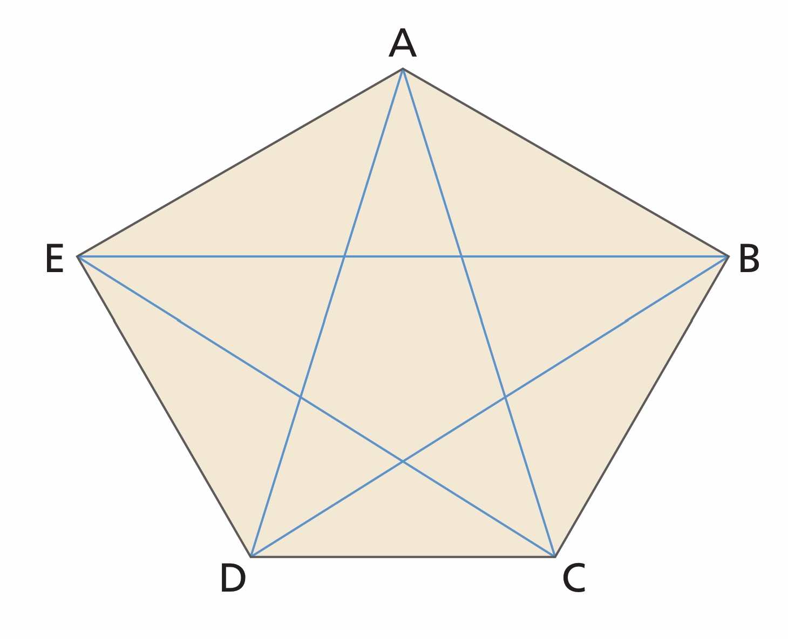
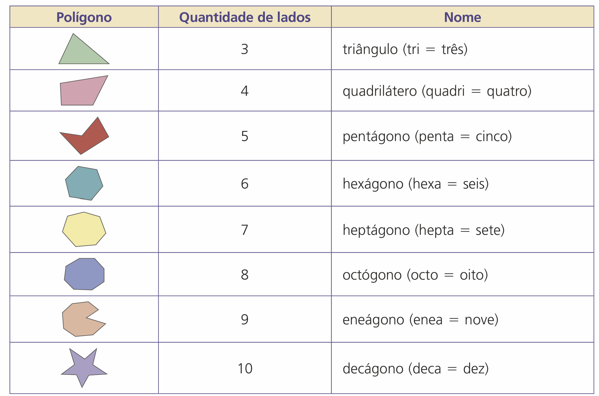
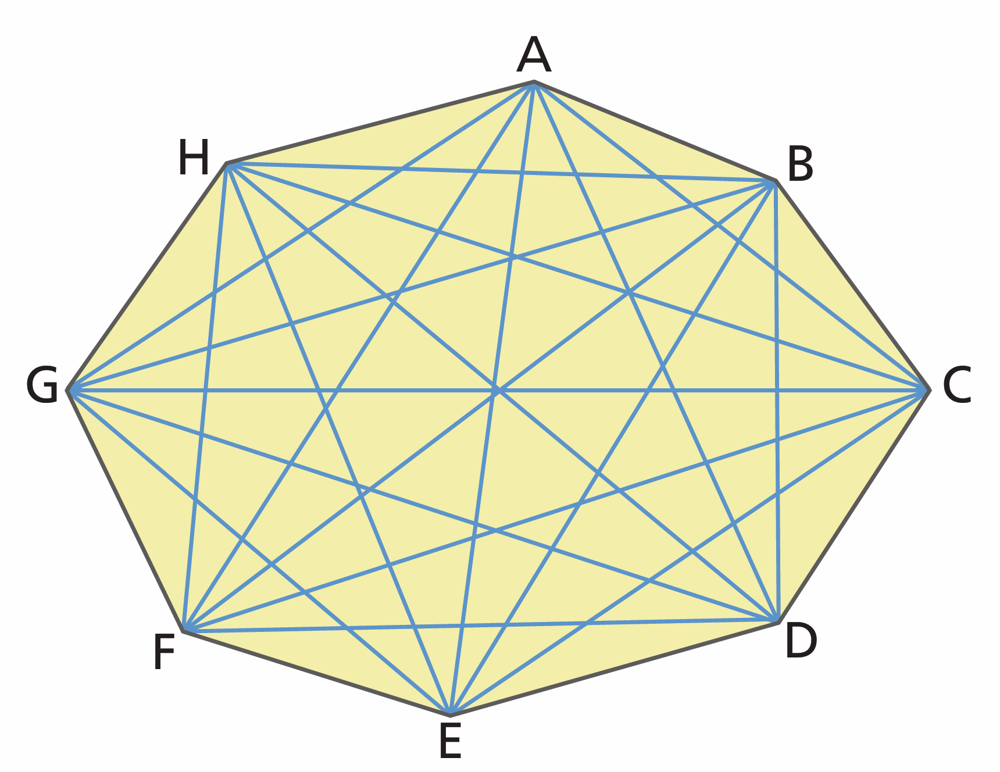

Prof. Ricardo Júnior | Matemática 8º Ano
Escola: EMEBTI Itelvina Silvina de Pinho
Polígonos e suas Classificações
Tempo Estimado: 100 minutos (2 aulas)
🎯 Objetivos da Aula
- Compreender a definição de polígono e identificar seus elementos.
- Diferenciar polígonos convexos e não convexos.
- Conhecer as nomenclaturas.
- Calcular a quantidade de diagonais utilizando a fórmula matemática.
O que é um Polígono?
Um polígono é uma figura geométrica plana formada por uma linha fechada simples, composta apenas de segmentos de retas, e a sua região interna.

- Convexo: Qualquer linha reta traçada entre dois pontos internos fica 100% dentro da figura.
- Não Convexo: Existe pelo menos uma linha interna que passa pelo "lado de fora" da figura.
Hora de Pensar! 🧠
Pergunta Engajadora 1
Pense em uma estrela desenhada no papel. Se você esticar um elástico perfeitamente ao redor dela, o elástico encosta em todos os lados ou ficam "buracos" para dentro?
Baseado nisso, a estrela é convexa ou não convexa?
Elementos do Polígono


- Vértices: Os "bicos", pontos de encontro das retas (Ex: A, B, C, D, E).
- Lados: As linhas retas que contornam a figura.
- Ângulos Internos: A abertura dentro de cada "bico".
- Diagonais: Linhas que cruzam o meio, ligando vértices separados.
Hora de Pensar! 🧠
Pergunta Engajadora 2
Olhando para a imagem anterior do pentágono, conte: quantos vértices ("bicos") ele tem? E quantos lados?
Esse número é igual ou diferente?
Nomenclatura (Nomes)
O nome de um polígono é dado pela quantidade de lados (ou vértices) que ele possui.

Hora de Pensar! 🧠
Pergunta Engajadora 3
Na Copa do Mundo, se o Brasil ganhar mais uma vez, será chamado de Hexacampeão (6 vezes). Olhando a nossa tabela, como se chama o polígono que possui 6 lados?
A Fórmula das Diagonais
Tentar desenhar e contar todas as diagonais de uma figura com muitos lados (como este octógono abaixo) é muito trabalhoso e confuso. A matemática nos dá um atalho direto!

- d: Número total de diagonais. | n: Número de lados.
Exemplos Práticos (Junto com o Professor)
$$d = \frac{4 \cdot (4-3)}{2} \Rightarrow d = \frac{4 \cdot 1}{2} \Rightarrow d = 2$$
$$d = \frac{5 \cdot (5-3)}{2} \Rightarrow d = \frac{5 \cdot 2}{2} \Rightarrow d = 5$$
$$d = \frac{6 \cdot (6-3)}{2} \Rightarrow d = \frac{6 \cdot 3}{2} \Rightarrow d = 9$$
Atividade de Fixação
Coloque os conhecimentos em prática. Tente responder antes da revelação!